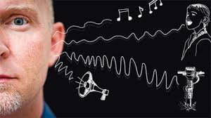

When traveling in Germany, you can easily deal with most situations you
encounter. You can talk about your experiences and clearly state your
point of view. This course caters to level B1, according to the Common
European Framework of Reference for Languages.
B1 Certificate
There are 4 sections in ZD exam
1.hören

this part is probably the hardest part, i suggest you change your
Playlist, ,you can use german radio or buffet website(very useful.)
replace all your Music with german hören at least for a month It does
wonders for your pronunciations and prevents you from the Shock you
might get on exam sessions (Germans normally speak very fast, it's hard
to follow with a native even if you have very good comprehension of all
the words!) First try to differentiate the words, then try to understand
one sentence at the time(verb, ,prepositions,akk, dativ,...) the last
level is try to hold the grasp of the main points in a conversation or
dialog. (Even if you don't know all the words)
2.Schrieben and sprechen
the easiest parts in my idea, for this part you just need to memorize
Redmittel, half of your work is done! Esp in schrieben. you can easily
find them from your books, you don't need anything more! In schreiben
with a little preparation you can easily score 80.
3.Lesen
3.Lesen: can be tricky. But still if you know the techniques, you will
be surprised how easily you can score in this part! Getting through this
part is highly dependent on your ability to grasp the full concept. and
practice!!!!!